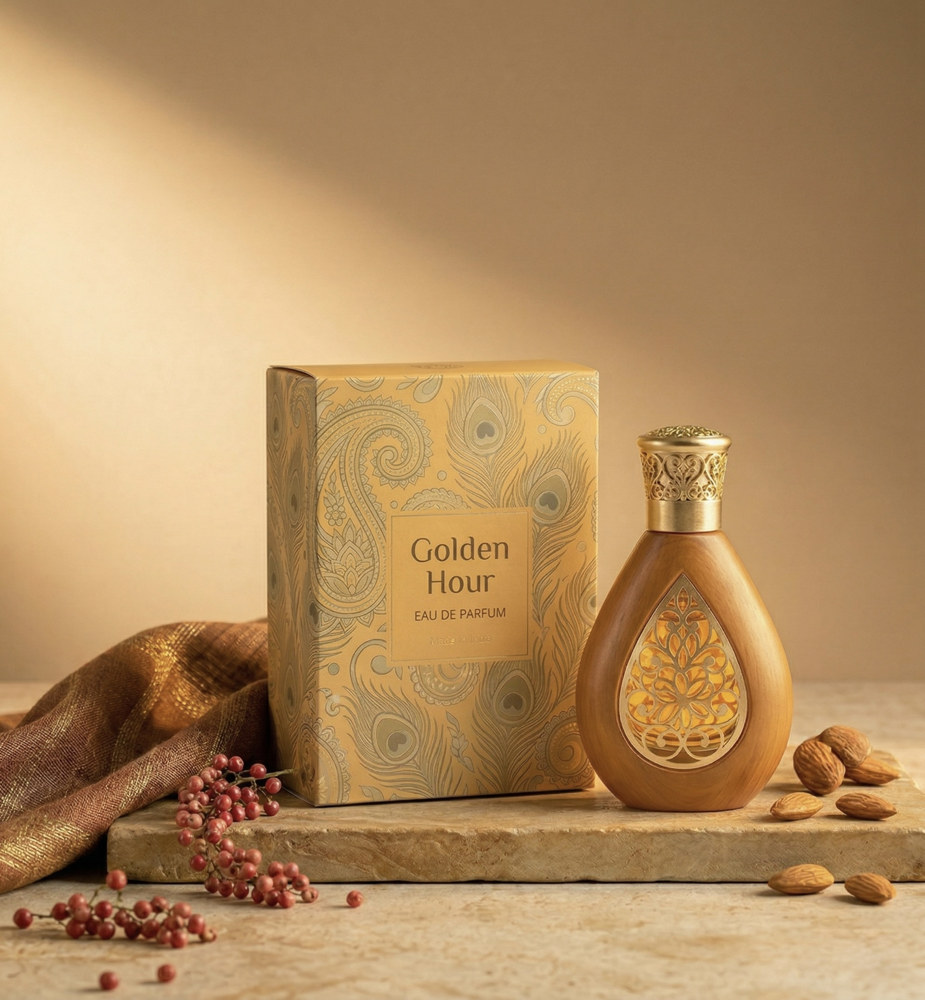
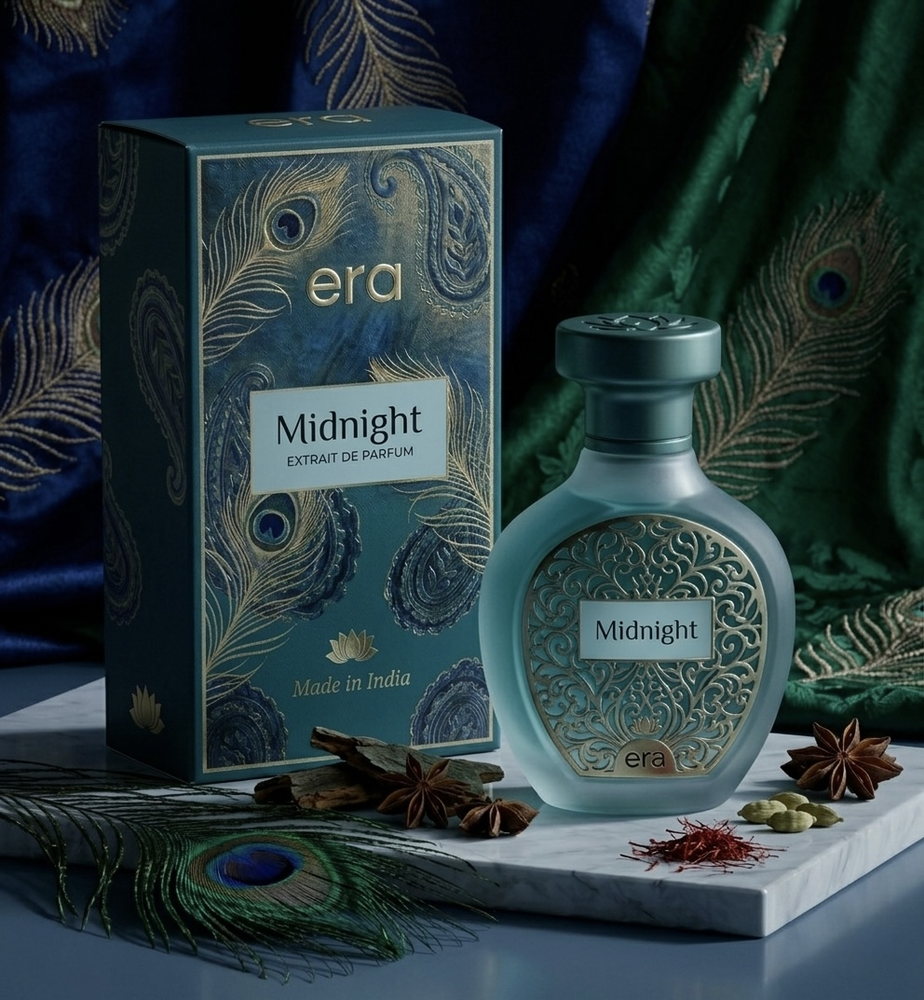

The genesis of our house is rooted in its very translation. Derived from the ancient concept of a Yug, an era represents an epoch—a defining, transformative span of time.
We are not static creatures. We evolve through different chapters of our lives, taking on new ambitions, facing new challenges, and discovering new facets of our confidence. era was founded on the belief that every one of these chapters deserves a signature.

Scent is the most powerful anchor to human memory. Long after a moment has passed, a single note of dark cedar or crushed cardamom can pull you violently back in time.
We craft our extraits de parfum not merely to make you smell exceptional, but to capture your current era. When you spray an era fragrance, you are bottling the ambition and the unwritten future of exactly who you are in this moment.
Born from a desire to bridge profound heritage with modern, beast-mode performance, era refuses to compromise. We ignore the fleeting trends of the mass market to focus purely on the architecture of scent—creating high-concentration formulas that project confidence and allure.
Spray the confidence within. Welcome to your new era.